ENIAC was completed in February of 1946 and is widely considered to be the first
general purpose electronic computer. Although there were numerous computing machines
that predate ENIAC, most of them were mechanical or electro-mechanical in nature and
none of them were considered general purpose.
The construction of ENIAC used 17,468 vacuum tubes, 7,200 diodes, 1,500 relays,
70,000 resisters, 10,000 capicitors and some 5 million solder joints. ENIAC weighed
approximately 27 tons, took up around 1,800 square feet of floor space and consumed
about 150kw of power to run.
ENIAC consisted of 32 units spread accross 40 panels and was programmed by setting
its thousands of switches spread across its units and then cabling its units together
to perform complex calculations
This ENIAC simulation simulates the majority of the original ENIAC machine. The following units are simulated:
All units are 100% simulated with the execption of the card reader and card punch.
In the case of the card reader and punch the plugboard
associated with these two
units has not yet been simulated. Once I have them fully figured out they will
be implemented in a future version.
Note: This program requires .net 4.0 framework to be installed
This setup allows the ENIAC to plot the Mandelbrot set on the card punch. Initially
the initial setup plots the entire set. It is possible to plot a subset by changing
the startup and increment values. A text file is included to help explain how this
setup functions.
This is a simple setup to compute the value of PI. It does this using the 1-1/3+1/5...
method. This is not the most efficient way to compute PI, but is simpler to understand
ENIAC was originally programed by setting the thousands of switches on its various units
and then cabling them together to perform sequences. Some time in 1948 ENIAC was
permanently wired to act more like a stored-program computer. After this wiring ENIAC
executed programs off of its function tables. Now programming took mere hours instead
of weeks. I have very little information on how this was done but was intrigued by
this change. I decided to attempt to create such a stored-program computer using only
the original ENIAC hardware. This setup is my attempt.
I saw on a website ( http://www.99-bottles-of-beer.net/)
a program for doing the 99 bottles
of bear song on the ENIAC. The program was written in an assembly language which means
it was not for the original hardware-programming model, and after examination of the
program and what I do know of the stored-program concept of the modifified ENIAC, I
am not quite sure this program was for the actual ENIAC. However, I was intrigued
by the method the guy used and so I produced this setup to punch out the lyrics of
the song. Since ENIAC only worked in numbers the ASCII numbers are punched onto
cards to output the song. A sample c program is included that can read the punch card
output and convert the codes back to ascii.
Tutorial 1: Getting started with ENIAC
Tutorial 2: Using the Master Programmer to control a fixed loop
Tutorial 4: Reading values from the Funtion Tables
Tutorial 5: Setting up the High-Speed Multiplier
Tutorial 6: Using the High-Speed Multiplier
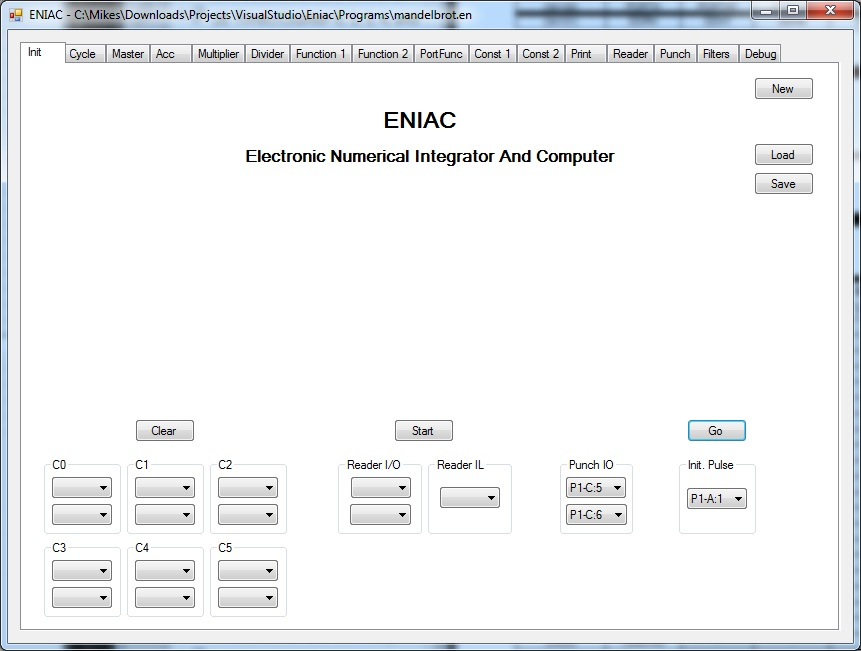
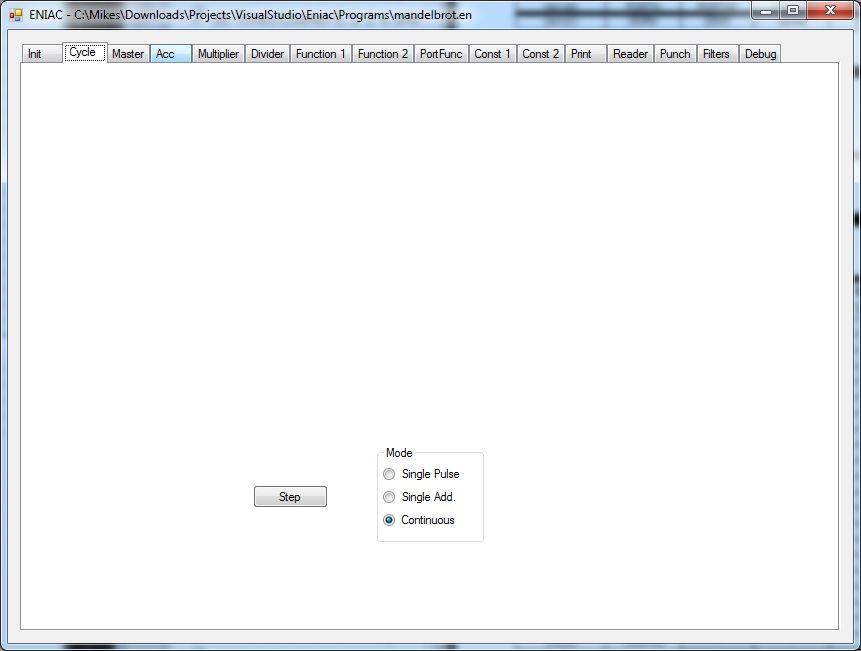
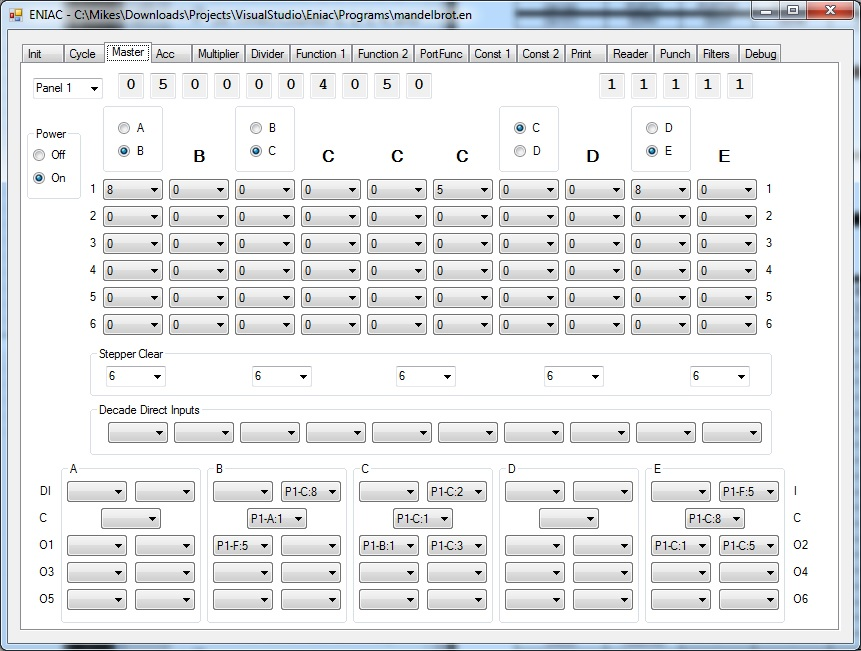
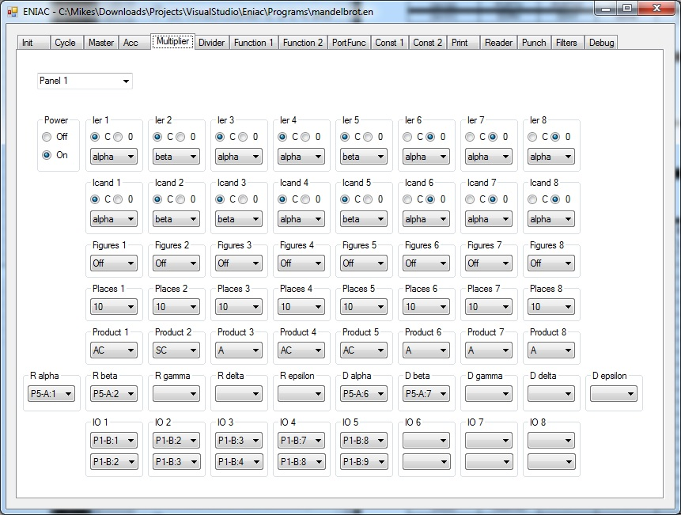
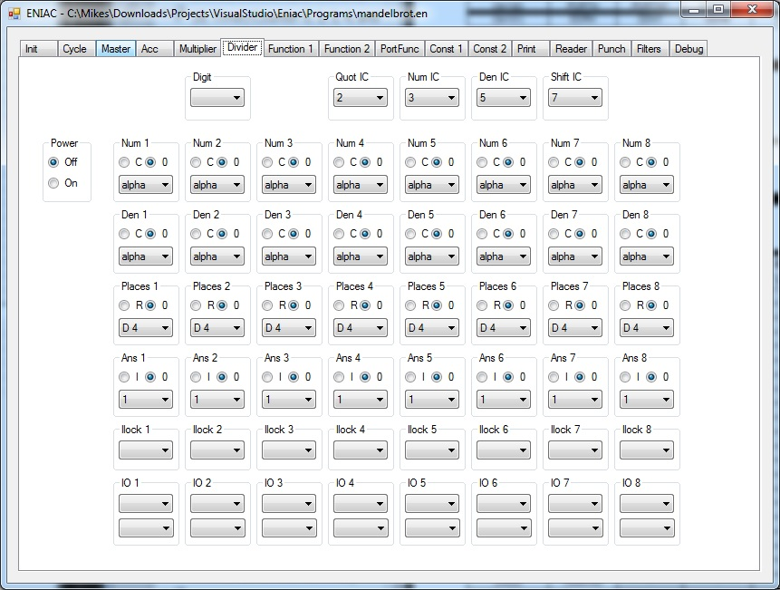
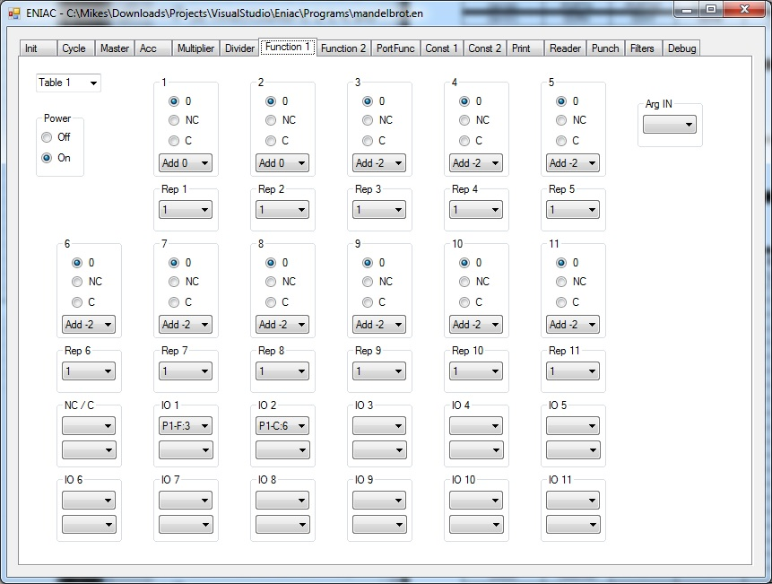
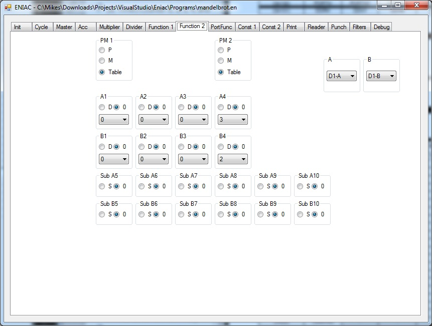
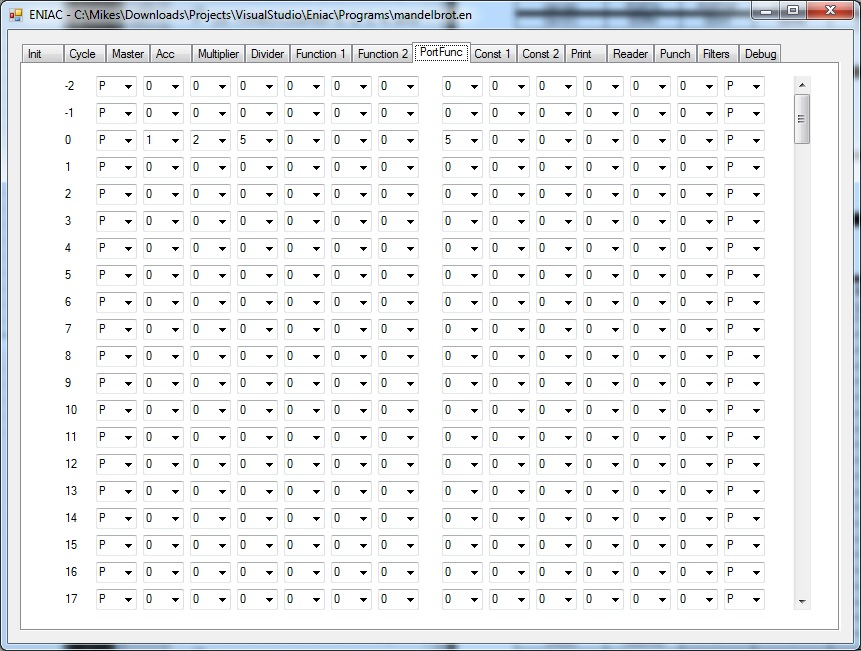
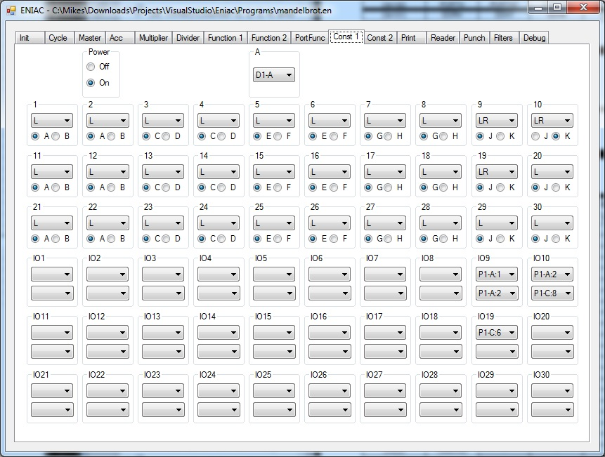
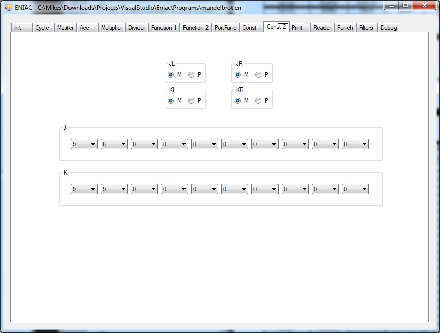
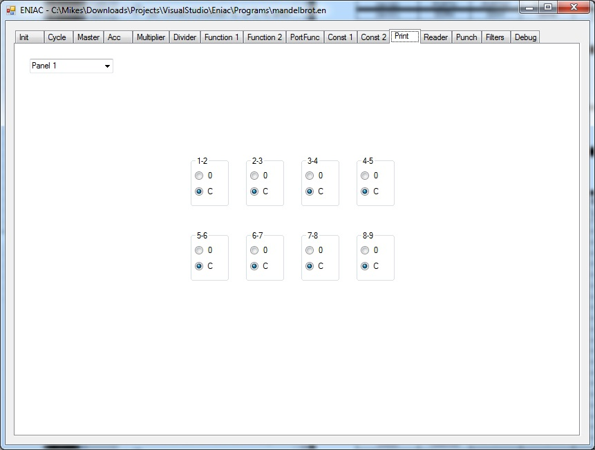

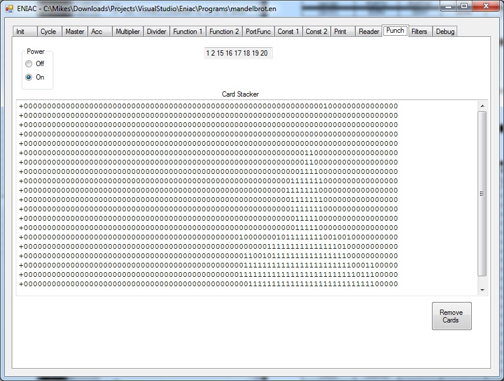
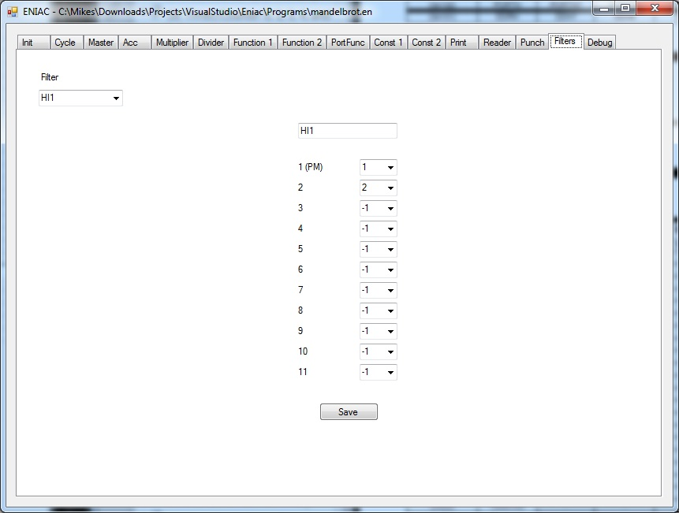
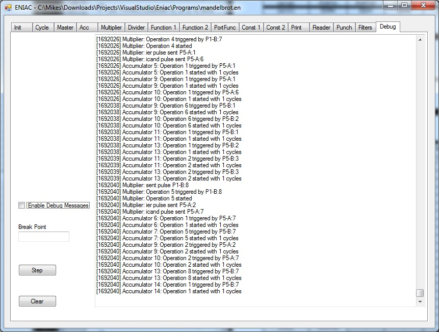